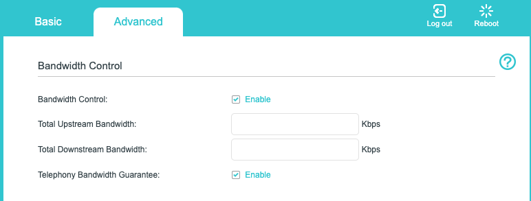
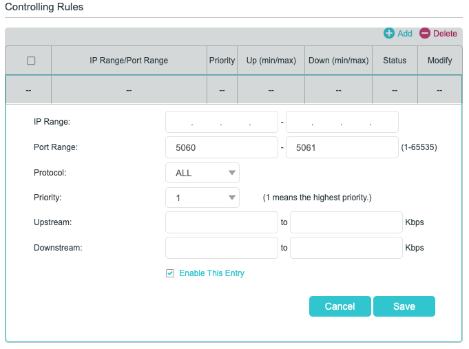
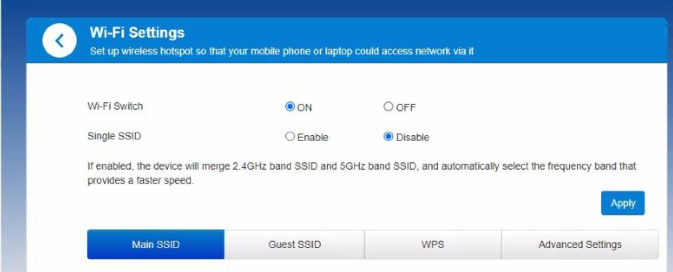
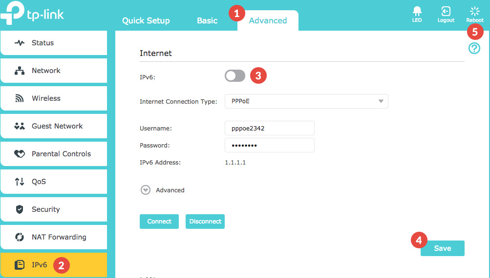
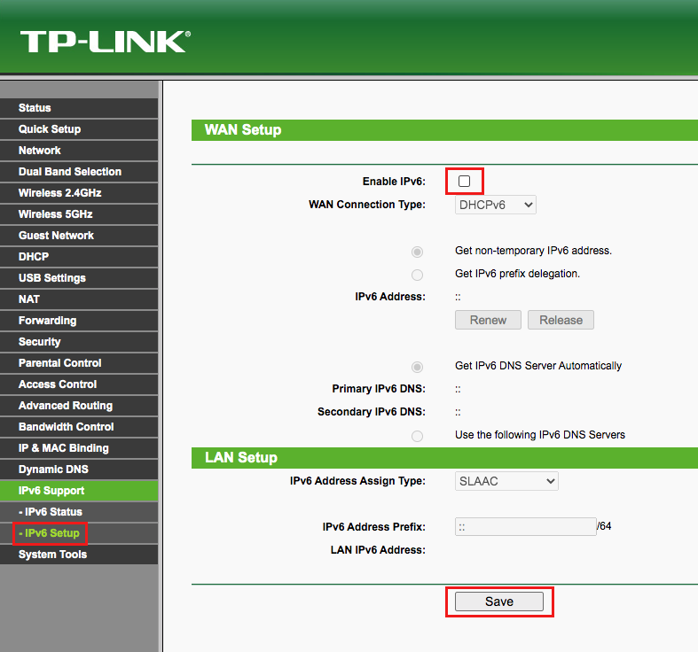
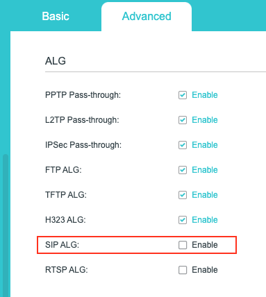
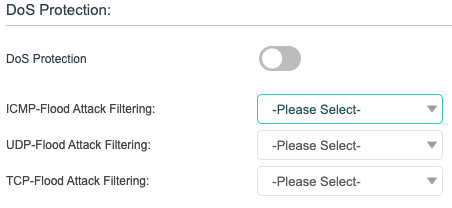

Phone calls made via your Jet Interactive Services are placed over your internet connection using a type of traffic called VoIP, which stands for Voice over Internet Protocol. A VoIP system works by taking your analogue voice signals, converting them into digital signals, and then sending them as data over your internet connection.
This means the most common reason for your Jet Phones or Hardware to not be connecting is due to Network connectivity issues. If your internet connection is not strong enough or not configured to support this type of traffic, you can occasionally experience call quality or app connectivity issues.
Jet provides a range of reports on Device Quality & Network reports that you can use to check the frequency of issues on your services. There are also some features custom-built into your Jet Phone app to help diagnose and detect any issues, and there are certain router settings and permissions that you can modify yourself, or speak to your technical contact or Internet Service Provider to modify on your behalf.
In this article we will cover:
- Common Network Issues
- Bandwidth Requirements
- Bandwidth Control
- Dual Bandwidths
- IPv4 & IPv6
- SIP ALG
- UDP or TCP Connection Protocols
- Technical Port and IP Information
If you need to speak to your Internet Service Provider regarding your network setup and security, please view our Technical Port and IP Information at the bottom of this page.
Common Network Issues
If you are working from an office environment, you will usually have an IT contact that manages your network for you, however many home setups or people using the Jet Phone while in transit will be relying on more basic commercial setups.
If you're working from home, many Internet Service Providers (ISPs) will send you out a pre-configured modem (router) when you sign up for your service, and unless you are particularly tech-savvy, most people simply plug it in and begin using their pre-configured internet without issue.
However, home networks are not usually set up to efficiently handle voice calls being made over the internet, and your ISP may have enabled some settings on your router that will restrict or even completely block your voice calls from coming through.
If you have an IT contact (eg: Geeks2U or similar), we would advise you to talk to them about your router setup, but you can also chat with your Internet Service Provider (ISP) for more assistance.
Most of these more advanced configurations require you to log into your modem, so before making any changes please ensure sure you are either confident in modifying and troubleshooting your network, or are able to access the appropriate support resources to make these changes for you.
Below are the most common things to look for, and these are the issues to raise with your technical contact or ISP.
Bandwidth Requirements
Each activity that you do over the internet requires various levels of minimum download speed to be able to perform each task. The more tasks you try to perform at once, the more speed you need to have available.
The table below shows the recommended speed of your network depending on how many calls you are undertaking at a time.
| Number of concurrent calls | Minimum Required Bandwidth | Recommended Bandwidth |
|---|---|---|
| 1 | 100 Kbps | 1 Mbps |
| 3 | 300 Kbps | 3 Mbps |
| 5 | 500 Kbps | 5 Mbps |
| 10 | 1 Mbps | 7-10 Mbps |
If you are also doing other activities over your internet connection - such as watching Netflix, taking video meetings, or just general browsing - You would also need enough bandwidth to support these activities alongside your VoIP calls.
The second table below breaks down the minimum recommended broadband speeds for each type of regular activity you could undertake on your network.
Activity |
Minimum Recommended Download Speed |
|---|---|
|
General Browsing and Email |
1 Mbps
|
|
Streaming Online Radio |
Less than 0.5 Mbps
|
|
VoIP Calls (Jet Phone) |
1 Mbps
|
|
Student |
5 - 25 Mbps
|
|
Telecommuting |
5 - 25 Mbps
|
|
File Downloading |
10 Mbps
|
|
Social Media |
1 Mbps
|
|
Streaming Standard Definition Video |
3 - 4 Mbps
|
|
Streaming High Definition (HD) Video |
5 - 8 Mbps
|
|
Streaming Ultra HD 4K Video |
25 Mbps
|
|
Standard Personal Video Call (e.g., Skype) |
1 Mbps
|
|
HD Personal Video Call (e.g., Skype) |
1.5 Mbps
|
|
HD Video Teleconferencing |
6 Mbps
|
|
Game Console Connecting to the Internet |
3 Mbps
|
|
Online Multiplayer |
4 Mbps
|
You should estimate how many of these different traffic types could be using your network connection at one time, and ensure your bandwidth is fast enough to be able to support all of these activities at once.
For example, if you have 4 people using your network, one using email while on a VoIP call (2 Mbps), one watching Netflix in 4K (up to 25 Mbps), one on a video conference (6 Mbps) and one playing Xbox online (4 Mbps), you would need a minimum of approximately 40 Mbps to support all activities without any interference.
Find your current network speed here
If you find you are not receiving the bandwidth promised by your ISP, you can also talk to them about their guarantee of service. You can also speak to your ISP about your usage, and increase your bandwidth allowance at your peak needed times of the day while limiting during other times, such as late at night.
If you are unable to increase your speeds and find that your connection is not fast enough to support all your needs, view the Bandwidth Control information further down this page to learn how to optimise your available bandwidth for best results.
Bandwidth Control
Bandwidth Control, also referred to as Quality of Service, allows you to specify how your available bandwidth is used. Depending on your router, some networks allow you to specify certain services or types of services to prioritise traffic for, and some can even reserve a portion of your available bandwidth for use only with these service types.
You can usually find basic manuals and guides for your model of router online, but you should speak to your ISP if you are unsure of your setup.
Please note - Jet Interactive will not make changes to any of your router settings, and we are unable to offer support for changes made to your settings that impact your existing network design.
If you are not experienced or confident to make the changes we suggest, please speak to your network provider or contact an IT support company such as Geeks2U or similar.
Bandwidth Control or QoS is usually found under the advanced settings in your modem. If you have a Telephony Bandwidth option built in, this should always be enabled.

You can also set up rules on your bandwidth control that allow you to guarantee certain ports or traffic types be recognised as high-priority traffic.

When prioritising traffic, your Jet Phones are referred to as VoIP services (Voice over IP) or SIP (Session Initiated Protocol) traffic. We recommend always setting them as a Priority 1 second only to security services, or reserving the appropriate level of bandwidth for the number of concurrent callers on your network (see guide above).
You can find the full technical information including port numbers used at the bottom of this page.
Dual Bandwidths
If you are finding that your Jet Soft Phone apps work without issue, but your hardware will not connect, you might have a network with dual bandwidths.
This means that your network provider has given you two or more network connections, usually a 2.4 gigahertz and 5 gigahertz bandwidth. If these multiple bandwidths are joined or merged, this can confuse your devices into which connection is active, and they will not register.
It is common to see this issue with a Yealink device where you can see the device is connected on the Online Status report, but this status report shows the device as "Unregistered". You will also commonly have outbound calls working fine but Inbound calls are not connecting.
This setting could look something like the image below:

If you are unable to locate this setting on your router, or you are not confident to make this change alone, please speak to your network provider and request that these two bandwidths are separated for your connection. This should resolve your problem.
Dual Bandwidth can also occasionally present as the UDP connection not being maintained. If the steps to resolve dual bandwidth are unsuccessful, please view our section on UDP or TCP Connection Protocols further down in this article.
Dual IPv4 & IPv6 setups
Some routers are being set up or updated to include options to use both IPv4 and IPv6 connections. This can cause your devices to have network issues, including:
- One-way audio (only one person can hear the other)
- Phones do not ring when called
- Calls drop after being connected
- Calls going straight to voicemail for no known reason
- Calls connect, but the audio drops out after a short time (usually within 30-60 seconds)
Please update your router to run over IPv4 only and disable any IPv6 options.
This may be referred to in a few different ways depending on your modem brand, such as APN or PDP. Some of these options are below, please consult your User Guide for your modem to address this for your model.


SIP ALG
SIP ALG (Application Layer Gateway) is a setting on your modem or firewall that is designed to scan your voice data as it passes through your connection and modify it if necessary to provide the best possible result.
Unfortunately, it can sometimes cause more issues than it solves, as it can modify the SIP packets in unexpected ways, causing them to become corrupted and unreadable. It's not always noticeable straight away, especially since these issues often happen silently without users knowing.
Here are a few symptoms of SIP ALG issues that could be affecting your Jet Phone:
- One-way audio (only one person can hear the other)
- Phones do not ring when called
- Calls drop after being connected
- Calls going straight to voicemail for no known reason
When SIP ALG is interacting with your traffic in a negative way, this means that some data packets are being lost between the phone and the service provider. This traffic is essential to maintaining the phone's availability and maintaining the proper audio.
The SIP ALG setting can be turned off on your router or firewall settings. This is usually under Advanced settings and could be under a sub-heading such as ALG or NAT Forwarding.

If you are not experienced or confident to make the changes we suggest, please speak to your network provider or contact an IT support company such as Geeks2U or similar.
UDP or TCP Connection Protocols
When a call is made, the signal gets recorded and then split into thousands of tiny pieces, known as packets. Packets are usually encrypted and are very small in size to provide easier and fast data transfers between endpoints. Packets are all sent individually and reassembled on the other end to complete your audio signal.
Typically, a single packet contains anywhere from 10 to 30 milliseconds of audio. For a 5-minute call, this is about 15,000 packets being sent.
TCP and UDP are two of the most commonly used connection protocols used for data transmission across the Internet. These connections help structure the way web traffic travels through the Internet. The packets are sent from a source to your phone or computer, and if any of these packets are dropped, it will affect the quality of your call.
Some home routers will have UDP or TCP traffic blocked, filtered or restricted. This could appear for your services like your device is registered (ie: shows the Username/Display Name) but is showing No Service despite being connected to the internet.
There are many ways this could appear on your router, pictured below is one option called DoS (Denial of Service).

If you are not 100% confident to make this change on your own router, please speak to your IT contact or ISP to remove or change any TCP or UDP restrictions, as this will involve making advanced changes to your modem or firewall settings which could have a high risk and/or service impact to your setup.
The Jet team will not be able to assist with any changes needed, and we are not able to support your networking needs, even if a change is made that impacts your service.
Technical Port and IP Information
If you are making technical modifications to your services, these are the important points to note. These details can be provided with your ISP or IT professional to understand Jet's services and network activity:
- TCP/IP SIP traffic uses port 5060 or 5061. Please ensure these ports are open and free of restrictions.
- The audio of a call is via RTP traffic and can be transmitted across a range of port numbers between 10,000 and 20,000. Please ensure these ports are open and free of restrictions.
- Jet Interactive does not assign static IP addresses to our public-facing system. Instead, we use the PBX domain of pbx.jetinteractive.com.au. Please ensure this domain is allowed with full access permissions on your firewall security.